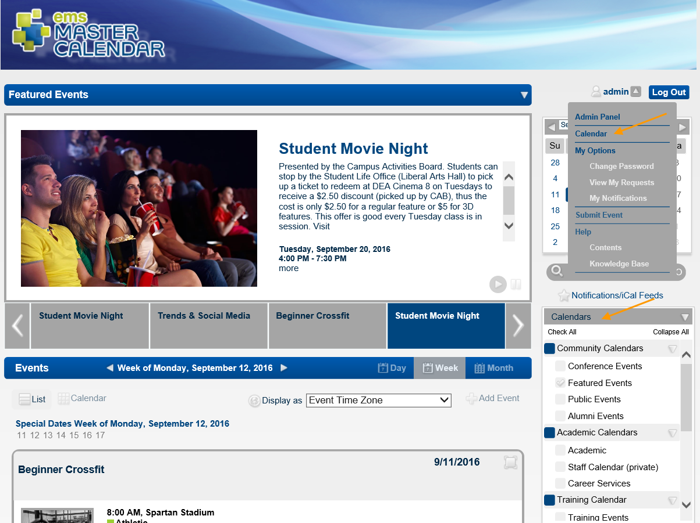
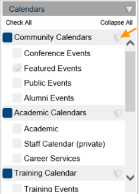
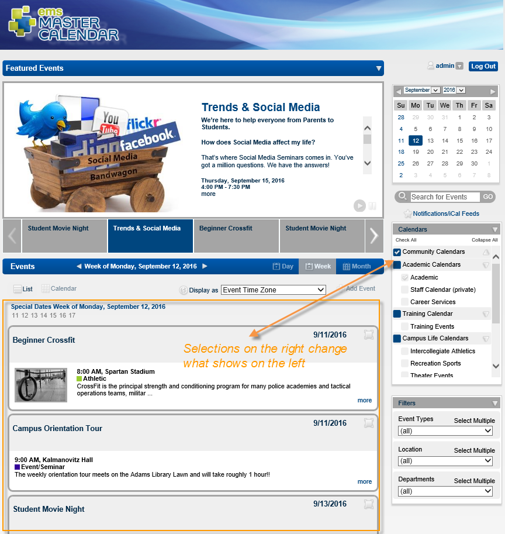
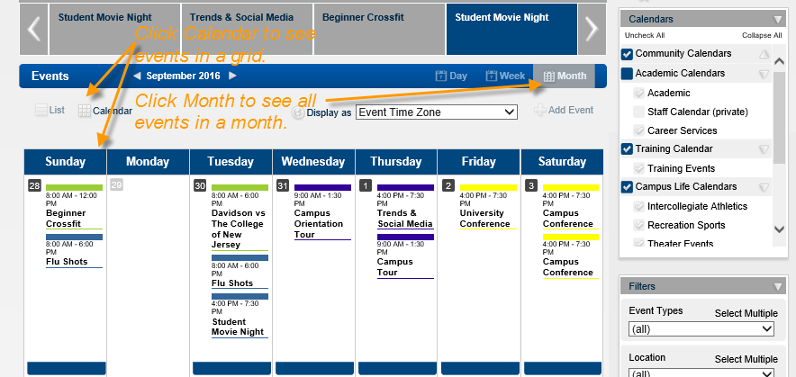

The Calendars section is available on the Default page and on the Master Calendar Home page. You can also click Calendar on the Master Calendar main menu.

The Calendar panel is condensed into groups, which you can expand or collapse. Next to each grouping and each category within each group, you can click to select specific items.
To expand a group, click the Expand button.

As you select and deselect checkboxes next to each item, the events shown in the left panel change.

Each calendar you select may have its own default timeframe (Day, Week, Month, or Year) and view (Calendar or List). For multiple calendars, a single combined calendar shows all the events. The default date for the calendar display is the current day’s date.
